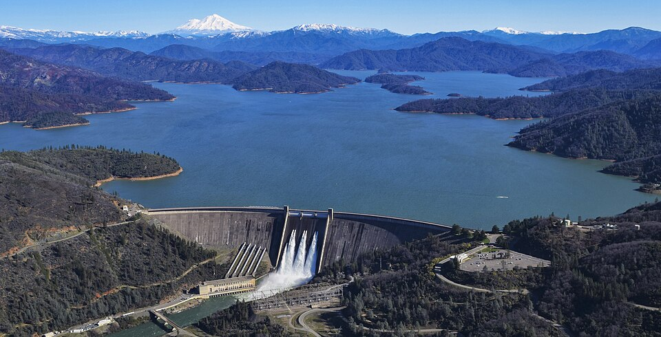

Cuánto empuja el agua sobre una pared, y por qué esa fuerza no actúa en el medio
Una represa sostiene un lago entero. Una compuerta de un canal se abre y se cierra contra el empuje del agua. La puerta de un auto que cayó a un río no se puede abrir con las manos. En los tres casos la pregunta es la misma: ¿con cuánta fuerza empuja el agua sobre una superficie plana sumergida, y dónde se aplica esa fuerza?
La presión del agua crece con la profundidad, según la ley fundamental de la hidrostática. Sobre una pared sumergida, entonces, cada franja horizontal recibe una presión distinta: poca arriba, mucha abajo. Para obtener la fuerza total hay que sumar la presión sobre toda el área. El libro de mecánica de fluidos de Genick Bar-Meir hace esa integral para una superficie plana inclinada un ángulo cualquiera y llega a un resultado compacto [1]:
Es decir: la fuerza total es la que haría la presión del centroide si actuara pareja sobre toda el área [1]. OpenStax usa la misma idea para una represa de 500 metros de ancho y 80 de profundidad. La presión del agua a la profundidad media, 40 metros, es de unos 392 kPa; multiplicada por el área de 4,00 × 104 m², da una fuerza de 1,57 × 1010 N [2]. Y es solo el 0,08 % del peso del agua del embalse: a la represa le importa la profundidad, no cuánta agua hay detrás [2].
La fuerza total no basta. Para diseñar una compuerta hay que saber también el momento que hace el agua, es decir, cuánto tiende a hacerla girar alrededor de sus bisagras. Bar-Meir lo calcula y define el centro de presiones: el punto donde habría que aplicar toda la fuerza para que hiciera el mismo momento que la presión repartida [3]. Medido a lo largo de la superficie desde la línea del agua, su posición es [3]:
Como el segundo término es siempre positivo, el centro de presiones está más abajo que el centroide: la presión es mayor abajo, y eso «tira» el punto de aplicación hacia el fondo. Para una pared rectangular vertical que empieza en la superficie, la cuenta da que la fuerza actúa a dos tercios de la profundidad (un cálculo propio con esa fórmula). Bar-Meir advierte que estas definiciones sirven solo cuando la presión atmosférica se puede ignorar o se cancela, y que a veces el cálculo directo es más simple [3].
La rampa de cajas: imaginá una pared sobre la que alguien apila cajas: una caja arriba de todo, dos un poco más abajo, tres más abajo todavía, y así. El peso total de las cajas es el de la pila; pero si querés reemplazarlas por un solo empujón, tenés que darlo más cerca del piso, donde hay más cajas. Así es la presión del agua: un triángulo que crece hacia abajo, con su «centro» a dos tercios de la altura.
Que la presión crezca con la profundidad tiene una consecuencia de diseño: la parte de abajo de una represa es la que más sufre, y por eso tiene sentido que una represa sea más gruesa en la base que en la cima (un razonamiento propio a partir de la ley hidrostática). OpenStax ilustra su ejemplo con la represa de las Tres Gargantas, sobre el río Yangtsé, en el centro de China, terminada en 2008: su embalse desplazó a más de un millón de personas [2].

Bar-Meir resuelve también el caso de una compuerta rectangular inclinada, sostenida por dos fuerzas, y muestra cómo se calculan las fuerzas mínimas para mantenerla en su lugar a partir del momento del agua alrededor de un punto [1]. Es el tipo de cuenta que se hace para dimensionar las bisagras y los cierres de una compuerta.
La puerta del auto bajo el agua: con la fórmula F = pcA se puede estimar por qué es tan difícil abrir la puerta de un auto sumergido. Con una puerta de 1 m² cuyo centro está a 1 metro de profundidad y aire adentro, la diferencia de presión es de unos 9800 Pa, y la fuerza del agua, de casi 10 000 N: el peso de una tonelada (un cálculo propio). Cuando el agua entra y las presiones de los dos lados se igualan, esa fuerza desaparece.
La fuerza del agua sobre una pared plana es la presión del centroide por el área, pero no actúa en el centroide: actúa más abajo, en el centro de presiones, porque la presión crece con la profundidad. Con esas dos ideas se dimensionan las compuertas de los canales y las represas que contienen lagos enteros, y se entiende por qué cada metro de profundidad cuenta.
Pregunta para la comunidad: Si duplicás la profundidad del agua contra una pared rectangular vertical del mismo ancho, ¿por cuánto se multiplica la fuerza total? Pista: cambian a la vez la presión media y el área mojada.